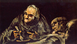
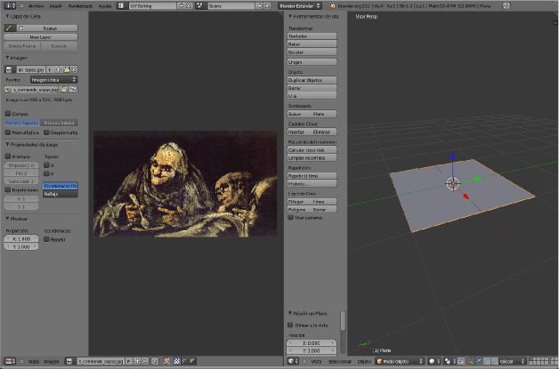
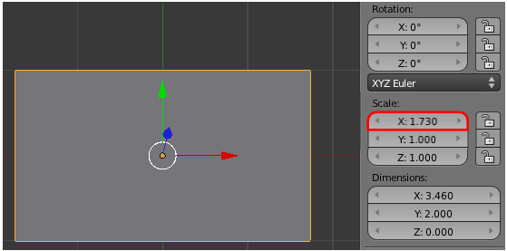
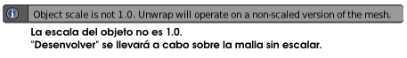
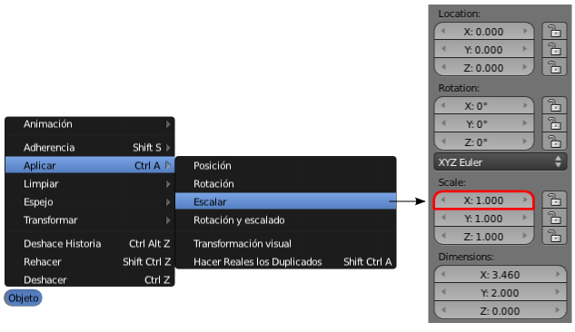
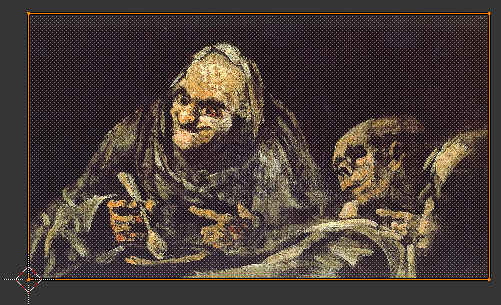
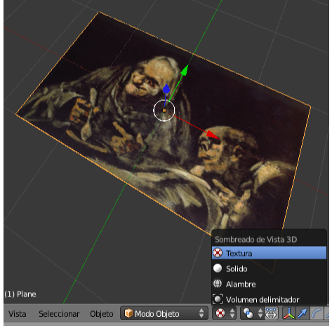
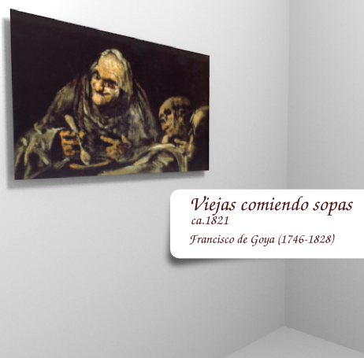

Mapeado en un plano
Preparamos la escena con un simple plano y nos dirigimos al entorno de trabajo UV Editing. Allí cargamos en el Editor UV  esta imagen.
esta imagen.
Viejos comiendo sopa
|

Viejos comiendo sopa // Autor: Francisco de Goya // Licencia: Dominio público
|
Esto es lo que se nos muestra.

En el editor Vista 3D pasamos a Modo Edición  y seleccionamos
y seleccionamos  la cara del plano. Después nos dirigimos al menú Malla/Despegar UV/Desenvolver.
la cara del plano. Después nos dirigimos al menú Malla/Despegar UV/Desenvolver.
En el editor Vista 3D no ocurre nada pero en el Editor UV  sí. El plano se ha proyectado sobre la imagen. Como es lógico no es posible que el cuadro se adapte a las proporciones del cuadrado.
sí. El plano se ha proyectado sobre la imagen. Como es lógico no es posible que el cuadro se adapte a las proporciones del cuadrado.
¿Cómo solucionamos ese problema? Está claro que debemos deformar el cuadrado en el editor Vista 3D para que tenga las proporciones adecuadas. Podemos hacerlo de una manera más o menos intuitiva porque la finalidad de Blender no es ese tipo de exactitudes pero vamos a aprovechar para recordar ediciones básicas con el panel de Propiedades ("N").
- Pasamos a Modo Objeto
 y en el panel Propiedades ("N") aplicamos la escala en X para ajustar las proporciones. Como la imagen mide 900x520 la relación entre los lados es 900/520=1.73.
y en el panel Propiedades ("N") aplicamos la escala en X para ajustar las proporciones. Como la imagen mide 900x520 la relación entre los lados es 900/520=1.73.

- Se origina un conflicto interno en Blender. Si le damos de nuevo la orden Desenvolver se seguirá proyectando un cuadrado como antes. El motivo es que la edición la hemos hecho en Modo Objeto lo que para Blender significa que, independientemente de la apariencia que nos esté mostrando ahora, en realidad la malla es un cuadrado. Por lo tanto, si le damos la orden Desenvolver, Blender nos devolverá este mensaje en la zona alta de la interfaz.

- Solucionar lo anterior es sencillo. Hay que decirle a Blender que considere la nueva forma de la malla como original, es decir, con todos los escalados a 1.000. La orden se da desde Modo Objeto con Objeto/Aplicar/Escalar. Vemos cómo la anterior escala en X de 1.730 se ajusta automáticamente a 1.000 sin variar la forma de la malla.

- Pasamos a Modo Edición
 , para seleccionar de nuevo la cara
, para seleccionar de nuevo la cara  y volver a dar la orden Malla/Despegar UV/Desenvolver. La proyección queda perfecta en el Editor UV .
y volver a dar la orden Malla/Despegar UV/Desenvolver. La proyección queda perfecta en el Editor UV .

El proceso de mapeado ha terminado. Regresamos al entorno de trabajo Default.
Pero ¿hay que trabajar a ciegas?. No. En el editor Vista 3D activamos el modo de sombreado Textura y la imagen del cuadro se ve perfectamente.
Posibles situaciones extrañas
La cara mapeada se ve negra al pasar a sombreado Textura.
El tipo de sombreado Textura tiene en cuenta las lámparas. Es muy probable que ninguna esté iluminando la cara en cuestión.
La cara mapeada se ve transparente. ¡Ha desaparecido!
Es un problema de Normales. De hecho, si hacemos órbita para ver la cara opuesta del plano veremos que en realidad se ha mapeado en aquella otra cara. La solución es seleccionar la cara mal mapeada e invertir la dirección de la normal con Malla/Normales/Voltear normales.
El mapeado se hace correctamente pero la imagen sale invertida o girada.
Hay varias herramientas para controlar esto (dando por hecho que la cara está seleccionada  en Modo Edición
en Modo Edición  ):
):
- Malla/Caras/Rotate UVs. Presenta dos opciones para rotar el mapeado: sentido Horario y Antihorario.
- Malla/Caras/Mirror UVs. Hace la simetría axial de la imagen en X o en Y.
Sólo queda hacer que la imagen salga en el render. Vamos al Material  del plano (o le creamos uno si no lo tiene ya) y activamos la opción Textura en caras en la botonera Opciones.
del plano (o le creamos uno si no lo tiene ya) y activamos la opción Textura en caras en la botonera Opciones.
A continuación nuestras Viejas comiendo sopas aplicadas en una ficha técnica muy simple sobre esta maravilla de la pintura.
